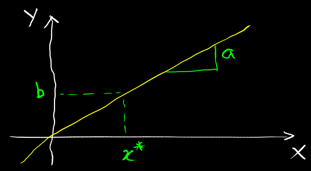
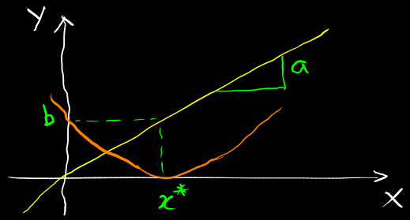

$ax\approx b$ is a standard operation in linear algebra. It represents the aim of finding the best solution for $x$ such that LHS is approximately equal to RHS.

$ax \approx{b}$
There are only a few things that $a$, $x$ and $b$ can do. $a$ is the slope. $x^*$ is the solution to be found such that $ax^* = b$.

The quadratic curve of least squares.
$\|ax-b\|^2$ scores all the different options along the parabola to find the lowest point on the quadratic curve. When the curve touches 0, $ax=b$. The 2 values diverge as the curve moves farther from 0.
If slope $a$ starts getting small, the solutions start getting worse - to achieve the same $b$, $x$ would need to be bigger.
With constraints
Adding constraints prevents a solution from going past a certain $x$ i.e. picks the smallest point on the curve that's within a certain regime. It is still based on the fundamental idea of first scoring all the points on the parabola and then finding the minimum of it.
Example
$$\begin{align*}
\min_x \quad & \|ax-b\|^2 \\
s.t. \quad & x\leq 2
\end{align*}$$
This equation says minimise over $x$ subject to $x \leq 2$ (the boundary of the search, the regime, the stop condition).
A scoring function has been created for all the possible $x$.
The search has been limited to the constraint $x \leq{2}$.
The aim is to find the lowest point.
This is a more robust formulation because it is possible to put more information into it.